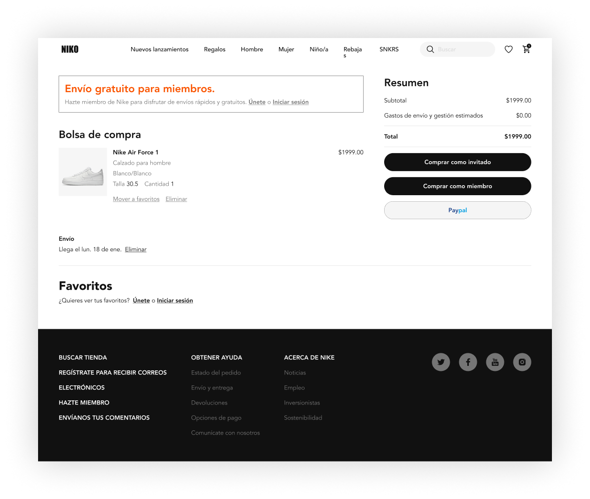
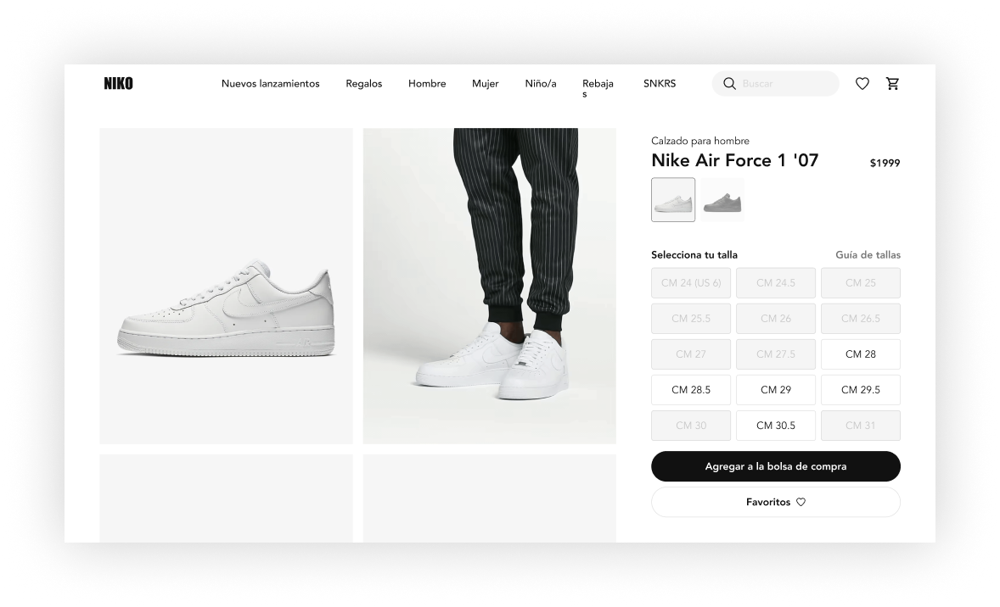

Este proyecto es dedicado a crear la interfaz de la pagina oficial de Niko, donde tenemos uno de los calzados más emblemáticos en la historia de los sneakers, AIR FORCE 1. Conoce cada uno de los componentes y dale vida a tu página. ¡Just do it!

